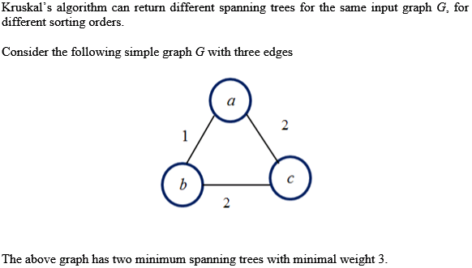
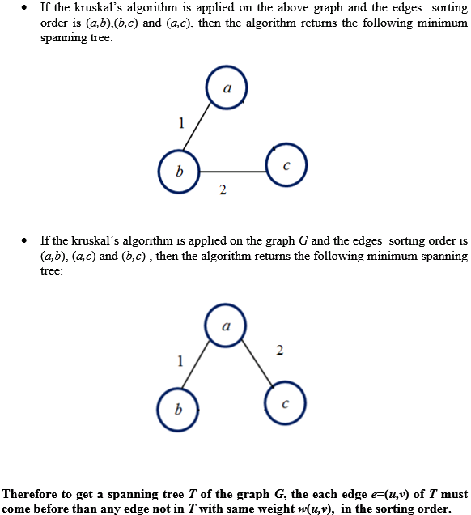
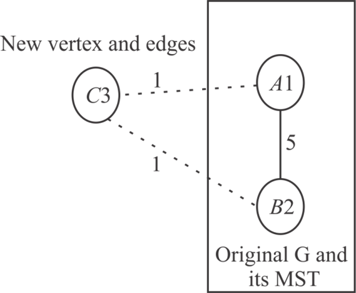
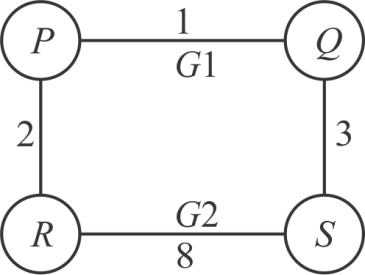
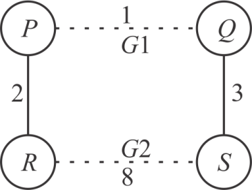
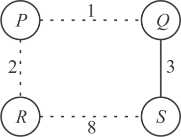

If the graph G is represented as an adjacency matrix, a row is searched in the adjacency matrix. It is assumed that the edge weights are stored in the adjacency matrix and the edges having 0 weights are unconnected edges.
The modified Prim’s algorithm is as follows:
MST-PRIMS (G, r)
for each
do

while do
for i = 1 to n
do if A[u][v] ==1 and and
key[v] = A [u, v]
end
end
end
The number of variables in outer while loop is |V| and the number of variables in the inner for loop is also |V|.
The run-time of the algorithm is 

Since, all the edge weights in the graph are integers in the range 1 to |V|, so the edges can be added to the array such that the edges that have the weight i go to the position i in the array.
When an element is deleted, it is removed from the array that contains that element and added to the array at a new position. To extract the minimum weight edge, a linked list is maintained among all the positions that contain non-empty lists. It will take constant time.
The total run time will be O(V+E).
If the edge weights lie in the range 1 to W, then the operations will take time. Thus, the total running time complexity of Prims algorithm if the edge weights are integers in the range 1 to W will be .
A minimum spanning tree (MST) is defined as weighted graph G of the spanning tree, in which the sum of edges is equal to the minimum weight.
Required time to update the MST if a new vertex and the incident edge are added to the graph G which has already computed the MST, are calculated by using the following steps:
• Consider that graph G is defined as G= (V, E) in
which the V is the set of vertices or  and E is
the set of edges or. Set of
edges can also be defined as.
and E is
the set of edges or. Set of
edges can also be defined as.
• To calculate the MST in this case or the graph which has a simple cycle, need to omit the edge which contains the maximum weight.
• Now suppose that vertex Vnew and incident edge is added to the some arbitrary connected graph.
• Suppose edge Emin is the minimum weight edge incident to the new vertex Vnew. It is clear that Emin will be exist in the new minimum spanning tree which is called as T’.
• However for every continuing edges incident to the Vnew, It is mandatory to decide that adding that edge and deleting of an original edge will lead to the lower cost spanning tree.
For this consider the following figure as an example in which graph G contain the vertices A1 and B2, and single edge is define as (A1, B2).

In the above diagram, graph G was initially comprised of the two vertices (A1 and B2) and single edge (A1, B2) for which the minimum spanning tree is that edge.
Add the third vertex C3 and edges the C3 and the other vertices to the graph. In this case the MST can be defined as the set of.
At this stage look at the all edges in the cycle which add the every new edge to the new minimum spanning tree T’ creates and delete the maximum weighted edge.
This stepwise approach need to examine all old Minimum Spanning Tree edges in general case, therefore best time is the to do so.
Professor Borden suggested the new divide and conquer algorithm to compute the MST which is specified in the problem. The suggested algorithm of Professor Borden will not work correctly.
The following example shows that the suggested algorithm fails.
Consider the following graph G which contains the four vertices P, Q, R and S which is connected with the four weighted edge PQ, PR, RS and SQ.

Now divide this graph G into the G1 and G2 which is define as: G1= {P, Q}, G2={R, S} and E1= {(P, Q)}, E2= {(R, S)}. Set of edges which cross the cut is define as Ee = {(P, R), (Q, S)}.
Now calculate and find the MST for the graph G1 and G2. In this case, it can be seen that the minimum spanning tree for graph G1 and G2 are:
MST (G 1 ) = G 1
MST (G 2 ) = G 2
Now minimum spanning tree for the graph G1 and graph G2 are shown as following figure:

Now from the above graph G, minimum weighted edge from the two across cut edges is the (P, R) edge.
Therefore edge (P, R) edge is sued for connecting the graph G1 and G2. It is the minimum spanning tree which is return by the Borden algorithm. The minimum spanning tree can be shown as:

Therefore, the algorithm proposed by Professor Borden will not compute the minimum spanning tree of G .